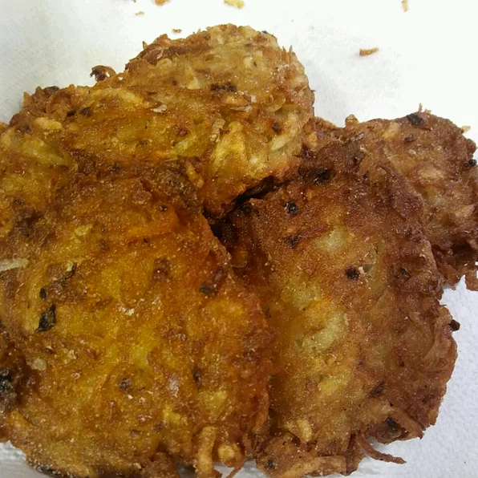

Potato Latkes

Description
Latkes (potato pancakes) are a must have at Hanukkah, but really are wonderful any time of year!
This is my mother's recipe, which is honestly the best latke I've had. I usually end up having to make a second batch because they disappear so quickly.
I've tried other recipes and always return to these. Lovely topped with sour cream or applesauce.
Ingredients
- 3 cups shredded potato
- ¼ cup grated onion
- 2 eggs, beaten
- 6 saltine crackers, or as needed, crushed
- 1 teaspoon salt
- ¼ teaspoon ground black pepper
- ½ cup vegetable oil, or as needed
Steps
- Mix potato, onion, eggs, crackers, salt, and pepper together in a large bowl.
- Pour enough vegetable oil into a skillet to fill about 1/2-inch deep; heat over medium-high heat.
- Drop spoonfuls of the potato mixture, first pressing potato mixture against the side of the bowl to remove excess liquid,
into the hot oil; slightly flatten the latkes into the oil with the back of your spoon so they are evenly thick.
- Cook in hot oil until browned and crisp, 3 to 5 minutes per side. Drain latkes on a plate lined with a paper towel.